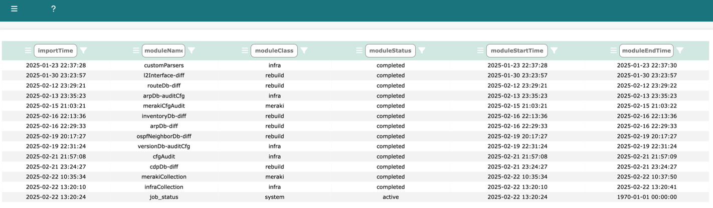
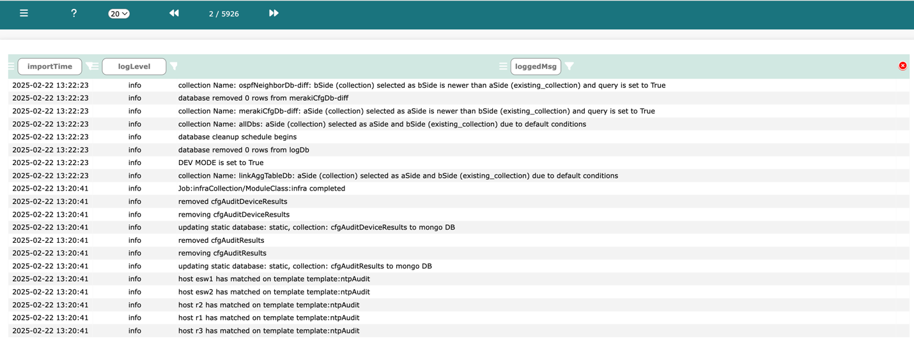
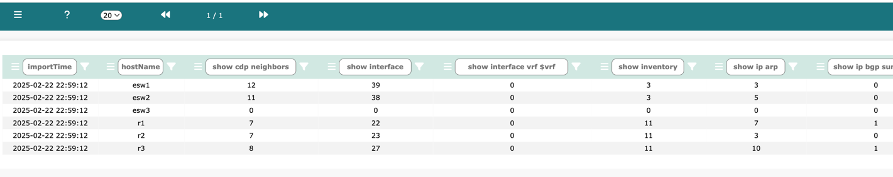

There are a number of Network Vista System tables which provide system level outputs such as collection results and logs.
Log into Network Vista, open the menu (top left), select Root/Admin
techTip: Scheduler is only visible as root, admin and sudo admin user


Log into Network Vista, open the menu (top left), select Infra -> Collection Errors
string: Normal condition when found under show running-config or show startup-config
DB Import Status: Database import results
Log into Network Vista, open the menu (top left), select Infra -> DB Import Status

Each column displays the total number of rows which were imported (per device, per show output).